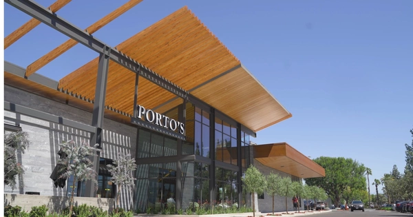
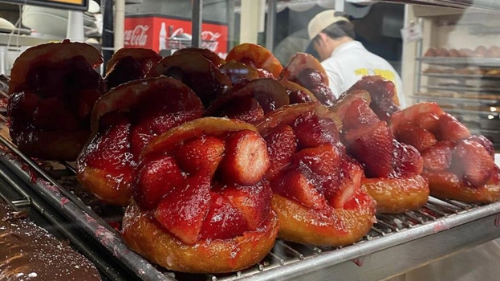

Southern California - Sunshine Stay
Discover the wonderful things available in Southern California that are outside of the tourist norms!
What brings you to southern california? Disneyland? California sunshine? Well, while you are here discover and explore more than just the boring norms and experiences why SoCal is worth visiting for more than just the Disney attractions.
Lets explore some favorites of the locals that you can enjoy while on that Disneyland trip to make the most of your experiencs. Most of what is shared is within a hour drive of Anaheim and can be completed in just a day. Worth adding to your trip!
Must See
If you're visiting SoCal then you must visit these amazing spots normally know to only locals! There is much to do and see! From famous night markets to specialty stores and shopping centers!
Foodies
SoCal is jam packed with diverse food choices! It can get really overwhelming. Here are some spots we recommend trying!
 